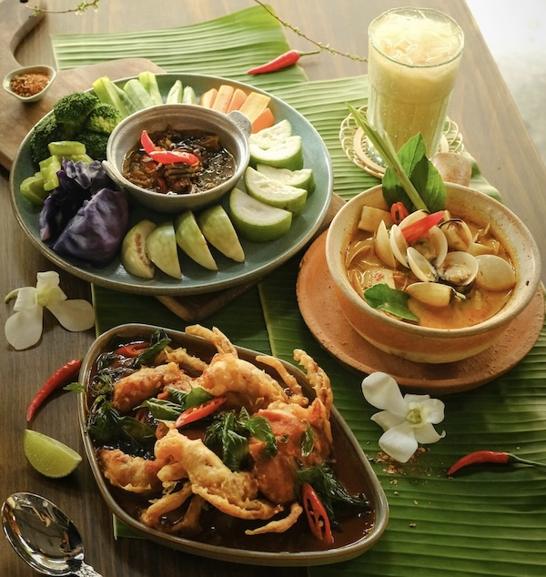

About Thai Dishes
Thai cuisine, known as ahran Thai (อาหารไทย), is a vibrant and aromatic culinary tradition that blends bold flavors, fresh ingredients, and intricate balance. Rooted in centuries of cultural exchange, Buddhism, and regional diversity, Thai food emphasizes harmony between the five essential tastes: sweet, sour, salty, bitter, and spicy. Signature dishes such as Pad Thai, green curry, and tom yum goong showcase the cuisine's dynamic character—from the coconut-rich curries of the south to the herb-driven dishes of the north. Renowned worldwide for its colorful presentation, layered flavors, and street food culture, Thai cuisine is more than a meal—it's an invitation into Thailand's history, hospitality, and joyful spirit.
Click the image to order on their websites.
Panang Nuar Nong Lai
Panang Nuar Nong Lai is a creamy Thai beef curry made with tender slices of beef, simmered in rich Panang curry paste and coconut milk. It's slightly sweet, mildly spicy, and often topped with kaffir lime leaves for a fragrant finish. This dish is known for its smooth texture and comforting flavor, perfect with a side of steamed rice.
Laughing Monk CafePad See You
Pad See You is a popular Thai stir-fried noodle dish made with wide rice noodles, soy sauce, Chinese broccoli, and eggs. Usually cooked with chicken, beef, or tofu, it's savory, slightly sweet, and full of smoky wok flavor. Hearty and satisfying, Pad See You is a beloved comfort food in Thai street cuisine.
Nud Pob Thai CuisineMango Sticky Rice
Mango Sticky Rice is a classic Thai dessert made with sweet glutinous rice, fresh ripe mango slices, and rich coconut milk. The creamy, slightly salty coconut sauce perfectly balances the natural sweetness of the mango. Simple yet indulgent, it's a must-try treat that captures the tropical essence of Thai cuisine.
Thonglor